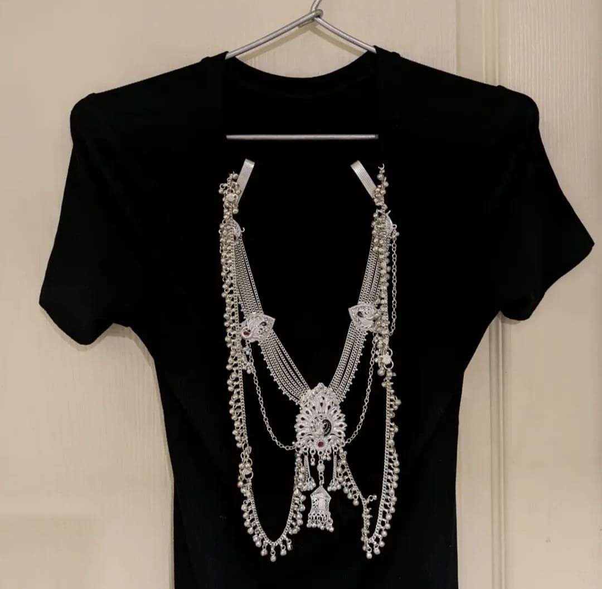
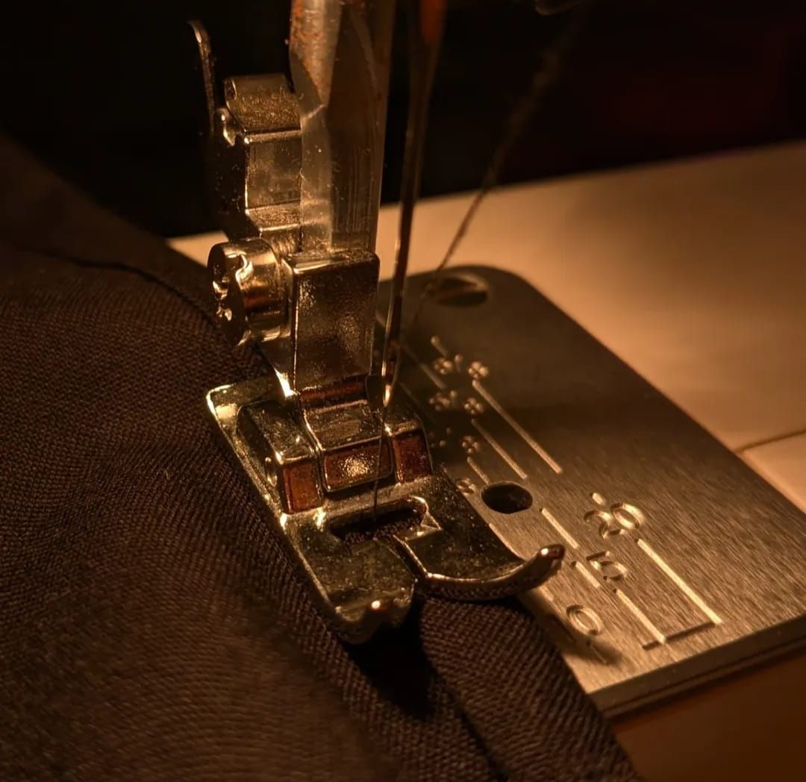

.jpeg)
A team-driven collection of four garments inspired by the Bhil tribe of India, translated into contemporary silhouettes through cultural research, surface interpretation and construction-led making.
As part of our Integrated Design Project during my first year at NIFT, my team and I designed a collection of four garments inspired by the Bhil tribe of India, translating their expressive motifs, colours and connection to nature into contemporary silhouettes.
I was primarily responsible for the construction process including pattern making, stitching and finishing using a sewing machine, and the project strengthened my sewing skills while keeping the structure of the garments precise.
Working from research and fabric sourcing through to making the final pieces was an enriching process that deepened my understanding of cultural interpretation and garment execution.
The project emerged from an in-depth study of Indian tribes, focusing on their cultural identity, art and textile traditions. We looked closely at the Bhil visual language and then translated those motifs into a fashion context without losing their sense of rhythm, colour or narrative.



Construction and making study — accessory layering, machine stitching and an early fitted look from the collection.
We developed sketches and boards that connected Bhil imagery, colour, and form with the final garments. This stage was about editing: keeping the spirit of the references while shaping them into wearable pieces that felt contemporary and coherent as a set.

.jpeg)
Design translation — the boards and drawings where the research was refined into garment ideas, motifs and composition.
This project strengthened my understanding of cultural research, surface interpretation and garment construction, while also emphasizing the importance of collaboration, precision and detail in design execution.